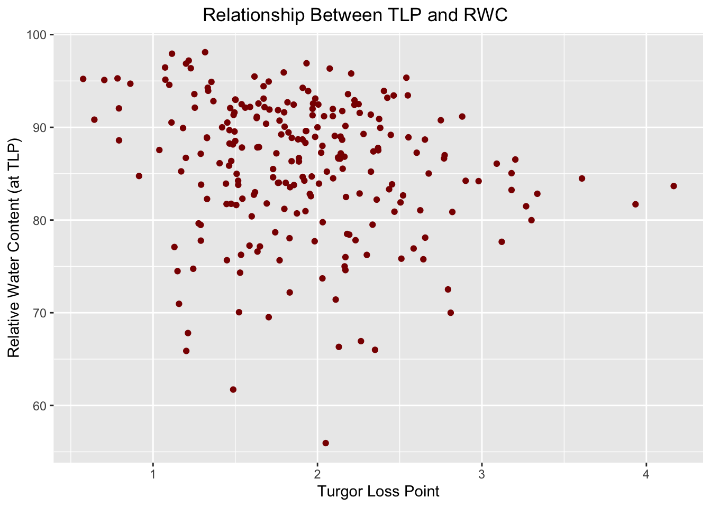
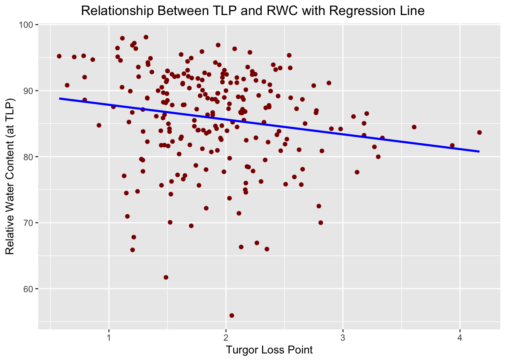
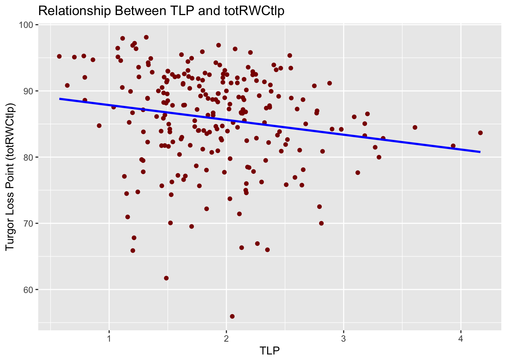
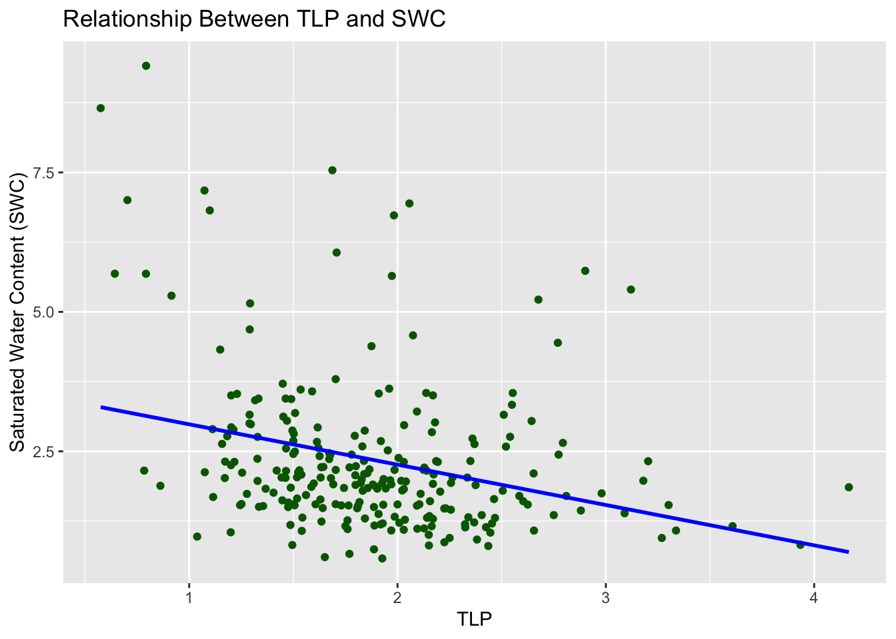
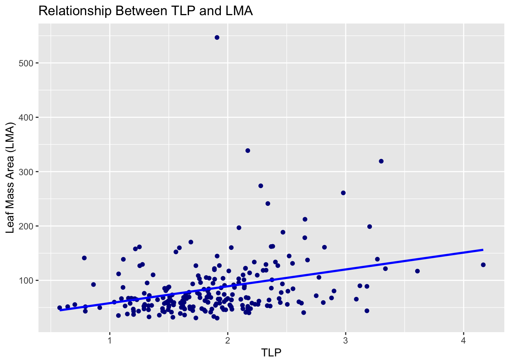
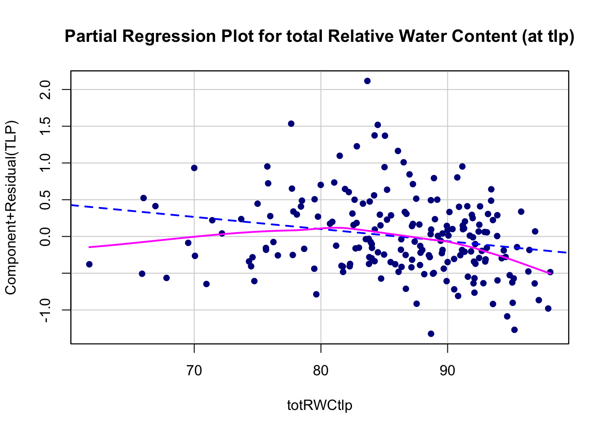
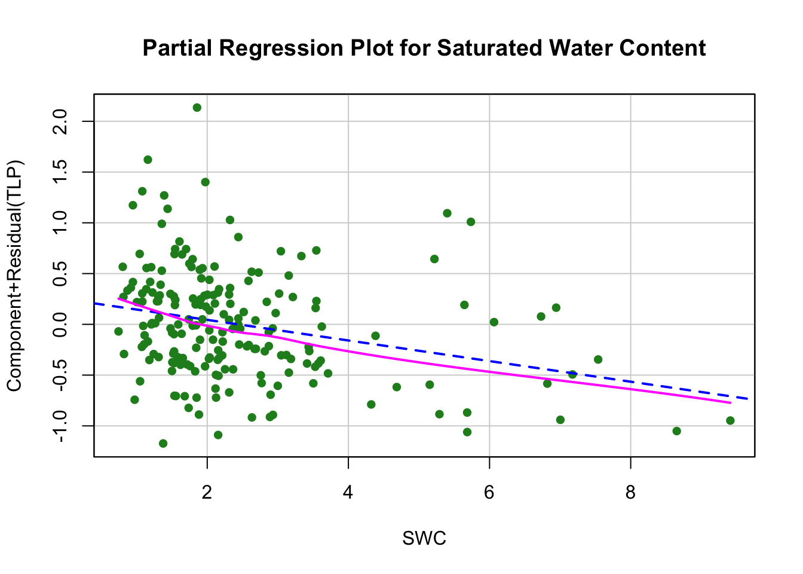
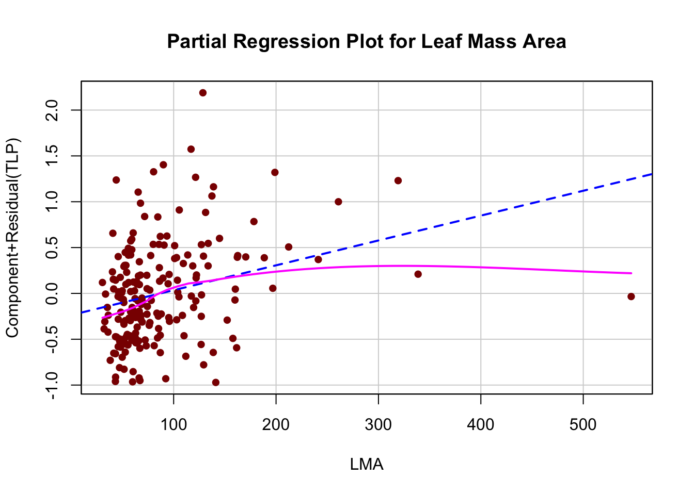
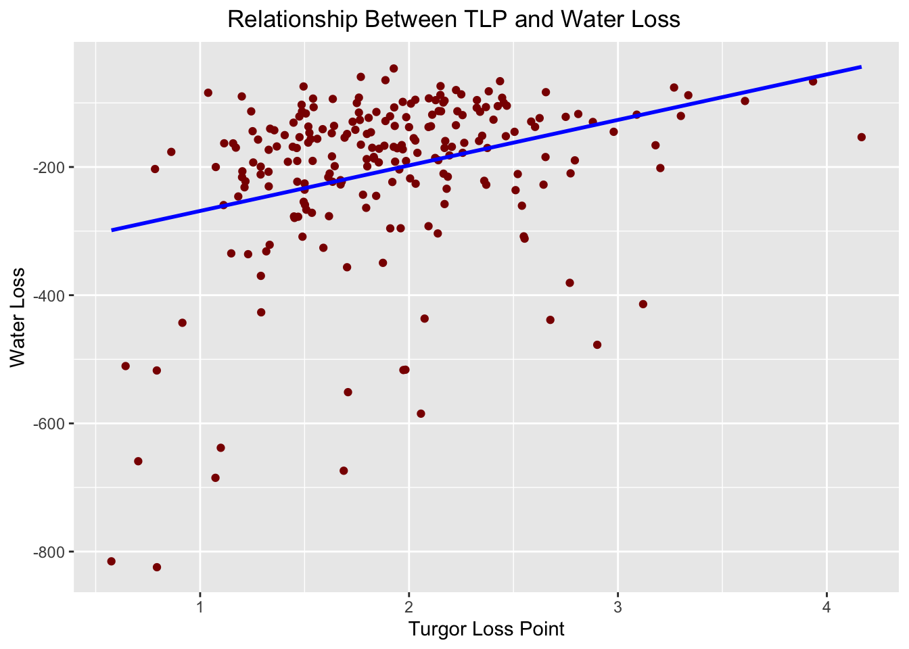

library(tidyverse)Statistical Analysis
Question: Does water content matter when a leaf wilts?
Null hypothesis There is no difference in water content when a leaf wiltsAlternate hypothesis There is a difference in water content when a leaf wilts
Before we begin our analysis, I want to explain a bit more on the variables that will be presented and the reason behind exploring this question.
The most important variable we will be looking at is Turgor Loss Point. The turgor loss point (TLP) of a leaf refers to the water potential at which a plant’s leaf cells begin to lose turgor pressure. Turgor pressure is generated by the water inside plant cells pushing against the rigid cell wall, keeping the leaf firm and upright. The turgor loss point is the specific water potential at which the pressure inside the cell drops to zero, causing the cell to become shrunk and contracted. As the plant loses water, the water potential of the cell becomes more negative. Typically at TLP the leaf loses its rigidity and wilts but TLP has other implications that can help determine drought tolerance. Plants with a more negative turgor loss point tend to be more drought-tolerant because they can retain turgor pressure longer under water stress. So, though TLP is not good for a leaf, it is an important indicator of a plant’s ability to withstand water stress.
Another variable we will be exploring relative to TLP is total Relative Water Content at TLP. It can easily be understood why this is an important variable in our analysis. The total Relative Water Content at TLP is measured from full saturation at which then water is lost and at some point reaches TLP. So, in other words the content of the water inside a leaf at turgor loss point. Again, a more negative value indicates drought tolerance but not necessarily more or less water. However it is commonly known that cell hydration in a leaf is necessary for many of its metabolic processes to occur. Though drought tolerance is a great reason to look at TLP, I want to explore water content for the needs of a leaf and the plant to survive.
The data we will be using in this blog is mostly on Trees which are a great example of having different physiological pressures. Trees are very important to the ecosystem because they support other organisms. They provide a fair amount of oxygen to the air. My interest with trees lies within their ability to store carbon. Without plenty of trees carbon dioxide will increase even more than it has in the past 20 years. So, I want to keep trees alive and help with their need for water that the recent drought has so drastically affected them with. In this analysis I want to look for variables that can predict the relative water content at which TLP occurs.
To begin we will read in the data, plot, and use a regression model to interpret the variable relationship. I will look at omitted variable bias and other ways to answer the question I have. I will conclude with this means for water content and TLP including the next steps I would take to clarify the answer further.
TLP_Other <- readRDS("data/fullspp.rds")The data that we are using is on mean values of 262 different species within the United States. The limitations include the difference in number of data points determining mean values per species.
Plotting
library(ggplot2)
ggplot(TLP_Other, aes(x = TLP, y = totRWCtlp)) +
geom_point(color = "darkred") +
labs(x = "Turgor Loss Point", y = "Relative Water Content (at TLP)", title = "Relationship Between TLP and RWC")+
theme(plot.title.position = "plot",
plot.title = element_text(hjust = 0.5, vjust = 1))
Plot 1 - Relationship between TLP and total RWC at TLP
In the plot above we are looking at the relationship between TLP and total RWC at TLP. Though this might seem a bit redundant or overly expressed, the TLP alone is actually a negative value, past 0. The TLP with regard to RWC is only pointing to the amount of water when TLP occurs. So, RWC at TLP is how much water is in a cell when TLP occurs. Plotted for their relationship, the amount of water in a leaf when TLP occurs varies drastically from ~55 to ~100.
ggplot(TLP_Other, aes(x = TLP, y = totRWCtlp)) +
geom_point(color = "darkred") + # Adds the scatter plot points
geom_smooth(method = "lm", se = FALSE, color = "blue") + # Adds a linear regression line
labs(x = "Turgor Loss Point", y = "Relative Water Content (at TLP)", title = "Relationship Between TLP and RWC with Regression Line") +
theme(
plot.title.position = "plot",
plot.title = element_text(hjust = 0.5, vjust = 1)
)`geom_smooth()` using formula = 'y ~ x'
Plot 2 - Regression line added to plot 1
Now we can more clearly see the relationship that decreases, thinking in negative numbers, TLP as total RWC at TLP decreases. The negative relationship can imply that as there is less water TLP is most likely to be more negative. The extent to which RWC can predict TLP is not clear here and further analysis are necessary, such as p value.
Fitting a linear regression model
# Fit the linear model
model <- lm(TLP ~ totRWCtlp, data = TLP_Other)
# Print the summary of the model (the regression stats)
summary(model)
Call:
lm(formula = TLP ~ totRWCtlp, data = TLP_Other)
Residuals:
Min 1Q Median 3Q Max
-1.19988 -0.41149 -0.03521 0.31326 2.22918
Coefficients:
Estimate Std. Error t value Pr(>|t|)
(Intercept) 3.112567 0.440979 7.058 1.94e-11 ***
totRWCtlp -0.014048 0.005119 -2.744 0.00654 **
---
Signif. codes: 0 '***' 0.001 '**' 0.01 '*' 0.05 '.' 0.1 ' ' 1
Residual standard error: 0.5767 on 232 degrees of freedom
(28 observations deleted due to missingness)
Multiple R-squared: 0.03144, Adjusted R-squared: 0.02727
F-statistic: 7.531 on 1 and 232 DF, p-value: 0.00654lm() - TLP and totRWCtlp
The regression model above is for TLP and total RWC at TLP which we have already plotted. The slope is - 0.014 which is not much but still negative. The R-squared value is 0.031 which means predictability is only 3%. The p value however significant therefore we can reject the null hypothesis. The p value is less than 0.05 so there is a difference in water content when a leaf wilts. By how much is a question on its own, though I do want to explore that, let’s look at possible omitted variable bias that can give a greater predictability value.
# Fit the model for TLP ~ totRWCtlp
model_totRWCtlp <- lm(TLP ~ totRWCtlp + SWC + LMA, data = TLP_Other)
# Print the summary of the model (the regression stats)
summary(model_totRWCtlp)
Call:
lm(formula = TLP ~ totRWCtlp + SWC + LMA, data = TLP_Other)
Residuals:
Min 1Q Median 3Q Max
-1.28082 -0.37916 -0.05036 0.28184 2.07624
Coefficients:
Estimate Std. Error t value Pr(>|t|)
(Intercept) 3.3131559 0.4636958 7.145 1.82e-11 ***
totRWCtlp -0.0165330 0.0053745 -3.076 0.002403 **
SWC -0.1015162 0.0257595 -3.941 0.000114 ***
LMA 0.0027117 0.0006698 4.048 7.47e-05 ***
---
Signif. codes: 0 '***' 0.001 '**' 0.01 '*' 0.05 '.' 0.1 ' ' 1
Residual standard error: 0.5323 on 192 degrees of freedom
(66 observations deleted due to missingness)
Multiple R-squared: 0.1964, Adjusted R-squared: 0.1839
F-statistic: 15.65 on 3 and 192 DF, p-value: 3.821e-09lm() - TLP and totRWCtlp + Saturated Water Content + Leaf Mass Area
The regression model above is for TLP and total RWC at TLP but includes saturated water content, and leaf mass area which we have not plotted but will do next. First, let’s interpret these numbers to get a better idea on the bias that may be present. Breaking it down by coefficient because there are more variables to look at.
The slope for:
RWC is -0.017 which is not much different than the previous model that excluded SWC and LMA and it is still negative so there is no omitted variable bias based on this.
SWC is -0.106 which is more negative than for RWC alone so this will make a difference in how TLP increases, or is more negative in value, if plotted together.
LMA is 0.003 which is positive but very small so it will have an effect on the overall slope if plotted but not drastically.
The p value for:
RWC is lower this time than when modeled alone, which could indicate that this model is better but both models reject the null hypothesis the same.
SWC is lower that RWC, again indicating that this variable may make a difference in the relationship with TLP.
LMA is the smallest value in this model and lowers the overall p value by much more than the other two variables.
The R-squared, considering RWC + SWC + LMA, is 0.196 so that is a predictability of 20% which is distinctively much higher than with total RWC at TLP alone. This could help better predict TLP but it seems to low still, and possibly other variables could be missing. Therefore there is omitted variable bias. Overall, SWC seems to have a slope that is more relevant to consider if plotted together but LMA has the smallest p value to consider when looking at the trend.
Plotting the new model by variable
library(ggplot2)
# Scatter plot for `totRWCtlp` and `TLP` with regression line
ggplot(TLP_Other, aes(y = totRWCtlp, x = TLP)) +
geom_point(color = "darkred") + # Scatter plot
geom_smooth(method = "lm", color = "blue", se = FALSE) + # Regression line
labs(y = "Turgor Loss Point (totRWCtlp)", x = "TLP", title = "Relationship Between TLP and totRWCtlp")
# Scatter plot for `SWC` and `TLP` with regression line
ggplot(TLP_Other, aes(y = SWC, x = TLP)) +
geom_point(color = "darkgreen") + # Scatter plot
geom_smooth(method = "lm", color = "blue", se = FALSE) + # Regression line
labs(y = "Saturated Water Content (SWC)", x = "TLP", title = "Relationship Between TLP and SWC")
# Scatter plot for `LMA` and `TLP` with regression line
ggplot(TLP_Other, aes(y = LMA, x = TLP)) +
geom_point(color = "darkblue") + # Scatter plot
geom_smooth(method = "lm", color = "blue", se = FALSE) + # Regression line
labs(y = "Leaf Mass Area (LMA)", x = "TLP", title = "Relationship Between TLP and LMA")
Plots 3-5
The plots above show the relationship between TLP and total RWC at TLP which we’ve seen already, TLP and SWA which I will explain first, then TLP and LMA which I will explain second. Note that TLP is still on the x axis but can easily be on the y axis, for ease of interpretation I set it to the x axis as with the previous plots. First, TLP and SWA, Saturated Water Content is the amount of water present in the leaf in g per g of dry mass. So, in terms of TLP the SWC value is not considering TLP but can help predict TLP if there were a strong relationship. Second, TLP and LMA, Leaf Mass Area is grams per area m2 and looks more like a cone shape so that is interesting. I can’t tell how well the residuals are so we are plotting those.
Residual plots with regression line
library(car) # For partial regression plots
# Partial regression plot for `totRWCtlp`
crPlot(model_totRWCtlp, "totRWCtlp",
main = "Partial Regression Plot for total Relative Water Content (at tlp)",
col = "darkblue",
pch = 16,
cex = 1.5,
grid = TRUE)
# Partial regression plot for `SWC`
crPlot(model_totRWCtlp, "SWC",
main = "Partial Regression Plot for Saturated Water Content",
col = "forestgreen",
pch = 16,
cex = 1.5,
grid = TRUE)
# Partial regression plot for `LMA`
crPlot(model_totRWCtlp, "LMA",
main = "Partial Regression Plot for Leaf Mass Area",
col = "darkred",
pch = 16,
cex = 1.5,
grid = TRUE)
Plots 6-8
Now that we’ve looked at the regression line, the residuals will be interesting to digress. The residuals can say a lot about a regression model because there are underlying patterns that a regression line does not necessarily capture. The plots above show the residual line in pink, and the area to notice is the 0.0 mark on the y axis. The closer the pink line stays to 0 the closer the observed values are to the predicted values determined from the regression model. As you can see from the plots above, the total RWC at TLP is the closest to 0 from end to end. All the plots show the pink line crossing 0 at some point but only total RWC at TLP stays somewhat consistent. The shape of the plotted points follow a trend and determine heteroscedasticity for SWA and LMA which means that there is no constant variance. Though the residual line for total RWC at TLP is not perfect it has potential to be explored further in my opinion.
To end this interesting yet insightful statistical analysis let’s quickly look at water loss in grams
# Fit the linear model
model_2 <- lm(TLP ~ water_loss.g, data = TLP_Other)
# Print the summary of the model (the regression stats)
summary(model_2)
Call:
lm(formula = TLP ~ water_loss.g, data = TLP_Other)
Residuals:
Min 1Q Median 3Q Max
-1.11735 -0.39947 -0.07695 0.30720 2.19347
Coefficients:
Estimate Std. Error t value Pr(>|t|)
(Intercept) 2.1938100 0.0697469 31.454 < 2e-16 ***
water_loss.g 0.0014398 0.0002876 5.006 1.14e-06 ***
---
Signif. codes: 0 '***' 0.001 '**' 0.01 '*' 0.05 '.' 0.1 ' ' 1
Residual standard error: 0.557 on 220 degrees of freedom
(40 observations deleted due to missingness)
Multiple R-squared: 0.1022, Adjusted R-squared: 0.09817
F-statistic: 25.06 on 1 and 220 DF, p-value: 1.14e-06lm() - TLP and Water Loss in grams
The regression model above is for TLP and water loss in grams which seems to have better predictability that total RWC at TLP but not when including the other variables, SWA and LMA. Based on the coefficients, the slope is positive bit small at 0.001 and the median residual is close to 0. The p value is less than 0.05 so that is significant, much more than RWC, and again the null hypothesis is rejected. The predictability is 10% which is interesting because though water loss and RWC are not the same they both are measurements of water which relative to TLP should be able to represent similar results in the context of interpreting a pattern with TLP. However, water loss is not at TLP as RWC is and thought water loss is closer to predicting TLP I stand by RWC being worth looking at further in a future statistical analysis project.
ggplot(TLP_Other, aes(x = TLP, y = water_loss.g)) +
geom_point(color = "darkred") + # Adds the scatter plot points
geom_smooth(method = "lm", se = FALSE, color = "blue") + # Adds a linear regression line
labs(x = "Turgor Loss Point", y = "Water Loss", title = "Relationship Between TLP and Water Loss") +
theme(
plot.title.position = "plot",
plot.title = element_text(hjust = 0.5, vjust = 1)
)`geom_smooth()` using formula = 'y ~ x'
Plot 9
I plotted the relationship of TLP with water loss to finalize this analysis. The residual line better shows the increase in slope as TLP increases, so does water loss. This correlates with the assumption that water loss in a plant causes wilt but the relationship ois not as strong as is quickly assumed.
Final Thoughts & Next Steps
The purpse of this blog was to look at how TLP can predict wilt by assessing the Relative Water Content at TLP which leaves me with more questions. Such that I will continue to explore the underlying patterns that can help predict the amount of water neccessary for trees to survive.
The next steps to consider include:
Looking for more statistical analysis - to help explain dyanmic relationships
Adding new variables or calculating some - total RWC at TLP was calculated and therefore other variables can be too
Determining differences - such as regions, seasons, and more …
References
Bartlett, M. K., Scoffoni, C., & Sack, L. (2012). The determinants of leaf turgor loss point and prediction of drought tolerance of species and biomes: a global meta-analysis. Ecology letters, 15(5), 393–405. https://doi.org/10.1111/j.1461-0248.2012.01751.x
Data in this blog is from the LEAF lab and is currently not available as this is part of an ongoing meta analysis
UCSB LEAF LAB